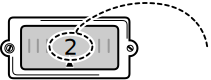

Last Chance Cadet Instruction Manual
How to Play:
The objective in Last Chance Cadet is to match the astronauts to their corresponding rockets. Use the mouse to connect the tow cable from each rocket to an astronaut.
You need to match all astronauts. You can see the number of astronauts still needing help by the dial on the bottom right.
Figure 1
Astronauts Left

Just one more astronaut left to save!
Sometimes not all of the astronauts are on the screen at one time - they can be split up among pages. You can use the page selection buttons to move between pages.
Figure 2
 The page shown on screen
Go back a page
Go forward a page
The page shown on screen
Go back a page
Go forward a page
The page shown on screen
Go back a page
Go forward a page
Once you have matched every astronaut to a rocket, the Finish button will glow. Press Finish to pull the astronauts in. Any incorrect matches will lead to stranded astronauts!
Upon completion you will receive your score.
Click to
close!
close!